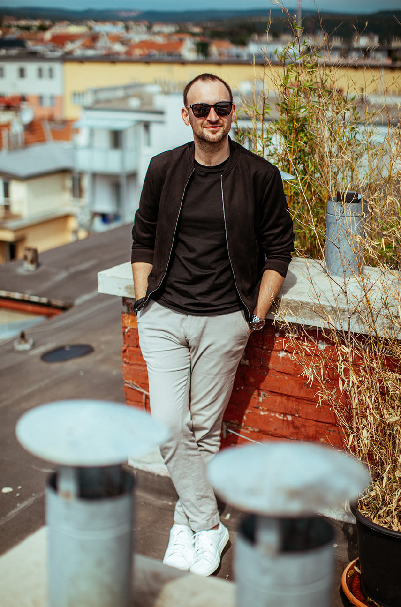
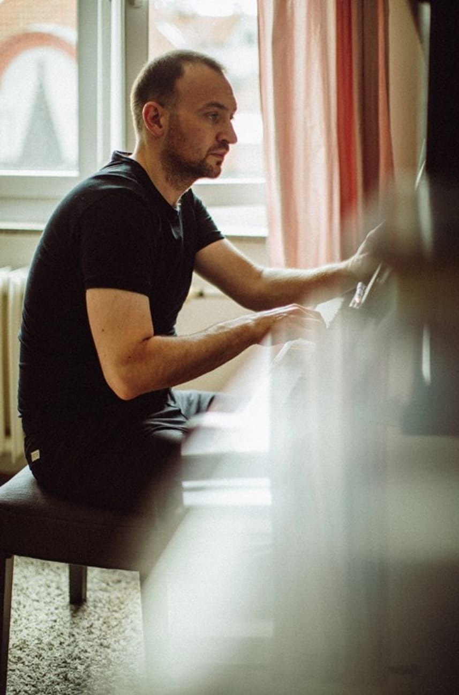
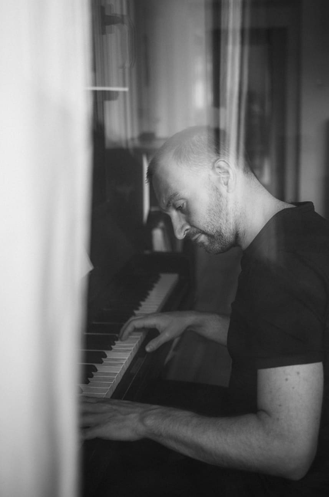
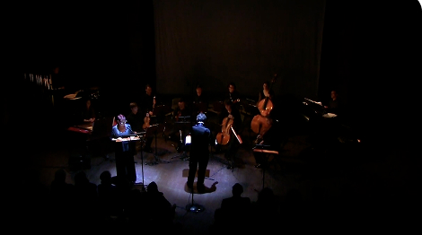
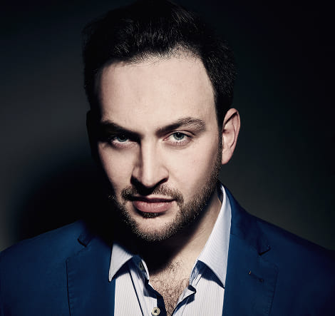
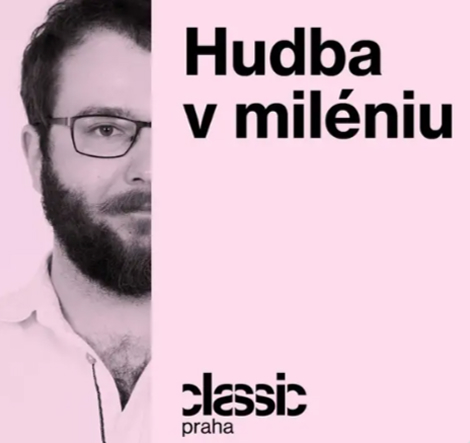
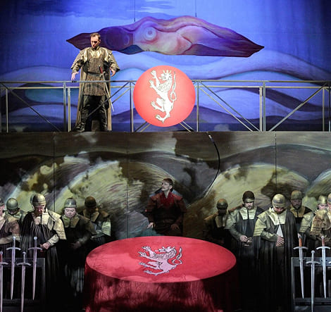
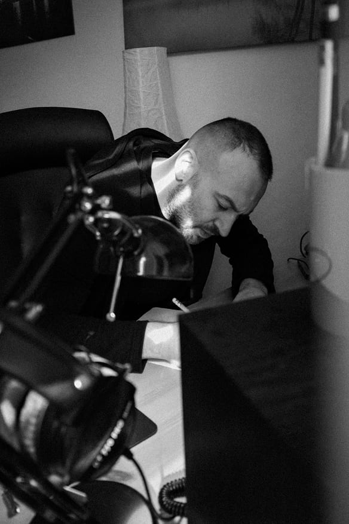
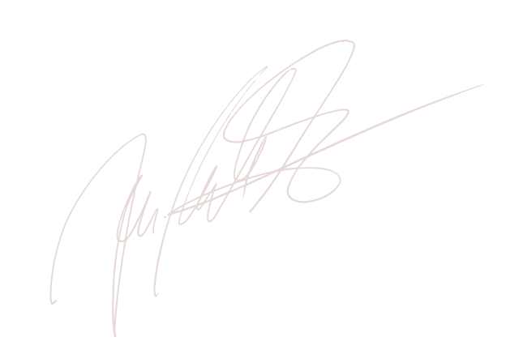

Designér
zážitků
Vašemu nápadu vdechnu život. Dbám na to, aby vaše vize souzněla s atmosférou a prostorem. V něm pak otevírám příležitost pro osobitost, dialog a hlubší zážitek.
Nadesignovat zážitekSkládám, tvořím, designuju pro vás zážitky. Za každou touto rolí je příběh, který mě formoval.
Více o mně
Vašemu nápadu vdechnu život. Dbám na to, aby vaše vize souzněla s atmosférou a prostorem. V něm pak otevírám příležitost pro osobitost, dialog a hlubší zážitek.
Nadesignovat zážitek
Hudba je pro mě esencí kreativity. Je to moment, kdy se nápady dávají do pohybu a okolní svět jde do pozadí. Právě tehdy vzniká prostor pro vnímání okamžiku, zpracování vnitřních témat a prožitků.
Zaposlouchejte se
Pomáhám značkám a projektům najít jejich pravý příběh. Přináším tvůrčí energii a svěží pohled, který posouvá vize do nové roviny zážitku.
Domluvit konzultaci„Tvorba je pro mě
pozorování času,
řemeslné zpracování
interních prožitků"

Hudba – Jiří M. Procházka.
Písňový cyklus ke 60. výročí úmrtí básníka Jana Zahradníčka (+1960), věnován všem politickým vězňům.
Živé nahrávání, Brno 2021.
Vypravěč, bas – Jiří M. Procházka.
Oratorium brevis na původní latinský text.
Pro smíšený vokální kvartet a varhanní pozitiv.
Premiéra: září 2022, Hradiště Levý Hradec.
Hudba, bas – Jiří M. Procházka.
Pro vokální kvintet.
Premiéra: 29. 3. 2024, Brno (Jezuitský kostel).
Hudba – Jiří M. Procházka.
Melodram na básně Jana Skácela.
Pro vypravěče a komorní orchestr.
Premiéra: 7. 10. 2019, Brno (Divadlo Husa na provázku).
Hudba – Jiří M. Procházka.
Úryvek z Lamentací proroka Jeremiáše k Bílé sobotě.
Pro Velikonoční festival duchovní hudby v Brně.
Skladba, zpěv – Jiří M. Procházka.
Monodrama na básně Milana Kundery ze sbírky Monology.
Pro soprán, vypravěče, akordeon a cimbál.
Premiéra: 4. 11. 2019, Ostrava (koncert k devadesátinám Milana Kundery).

Jiří Miroslav Procházka (*1988 Brno) je český zpěvák klasické hudby a hudební skladatel, člen kvintetu Czech Ensemble Baroque. Zpívá bas nebo baryton a věnuje se autorské tvorbě i designu zážitků.
Profil, Wikipedie

Jiří Miroslav Procházka je rodákem z Brna, kde v dětském sboru Kantiléna při Filharmonii Brno získal první zkušenosti se zpěvem a kde rovněž absolvoval tamní konzervatoř.
Rozhovor, pořad Hudba v miléniu

Basbarytonista Jiří Miroslav Procházka se narodil v Brně. V jeho širokém slohovém a žánrovém rozpětí má přední místo stylově poučená interpretace staré hudby.
Rozhovor, kulturní deník Ostravan.cz


Pěvec, skladatel a iniciátor kulturních akcí. Vzdělání získal na Konzervatoři Brno, VSMU v Bratislavě a pražské HAMU. Krom vlastních kompozic (např. Lamentace proroka Jeremiáše a Miserere mei Deus k Bílé sobotě, Hodiny, Legenda o sv. Ludmile, Mea culpa, Mše ke cti svaté Mučednice a mnoho dalších) se věnuje pedagogické činnosti a klasickému zpěvu, především poučené interpretaci staré hudby.
Hostuje na několika operních scénách, koncertně vystoupil s celou řadou domácích i zahraničních hudebních těles. Má za sebou nespočet autorských projektů (kupř. Tenebrae, Člověk na hraně svobody, Černá zem, Domov je tam daleko, daleko, [D]obrovský Skácel aj.). Zároveň jako skladatel obdržel dvě ceny OSA za rok 2024. Je spoluzakladatelem kulturně společenských platforem IndiDual, Nova cantio a mediálního projektu Téma 21.
Rezonuje s vámi má tvorba? Pokud ano, pojďme si promluvit o vaší představě detailněji. Napište mi zprávu a domluvíme se na podrobnostech.